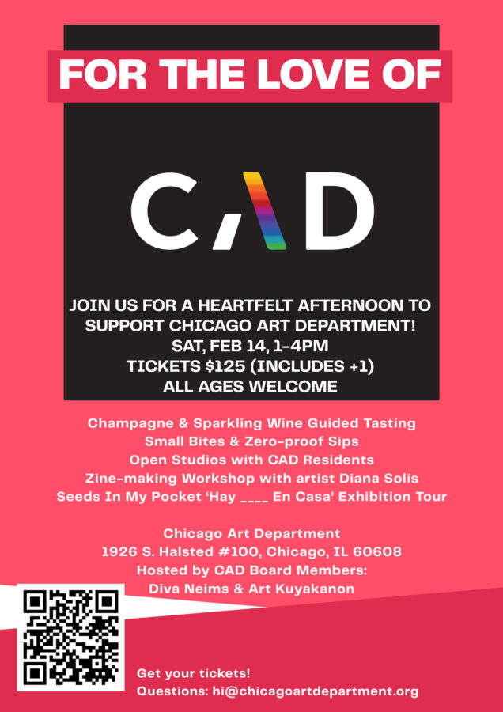

For the Love of CAD
Spend Valentine’s Day with Chicago Art Department. Champagne and sparkling wine guided tasting. Small bites and zero proof sips. Open studios with CAD residents. Zine making with Diana Solís. Seeds In My Pocket exhibition tour.
Tickets are $125 and include a plus one. All ages welcome.
1926 S Halsted in Pilsen.